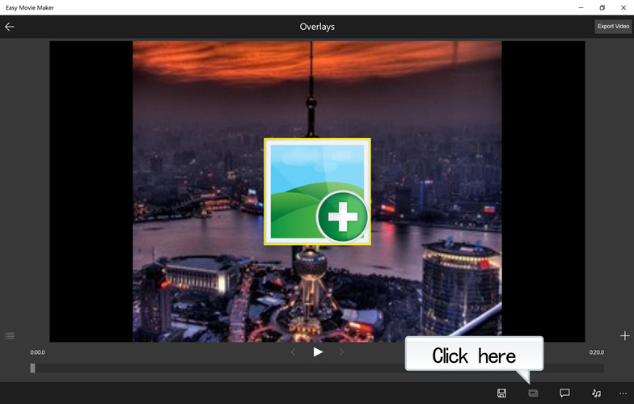
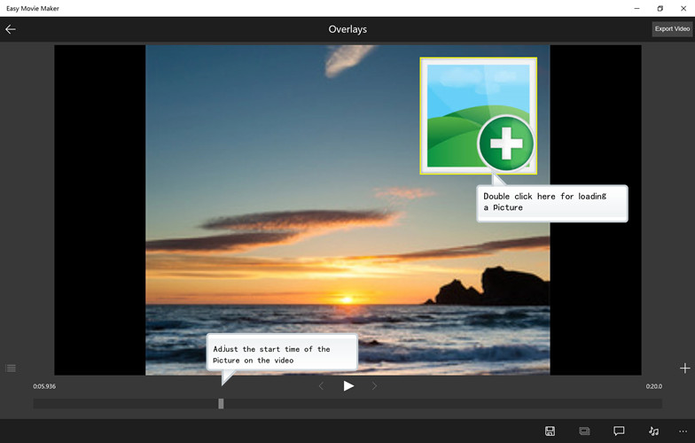
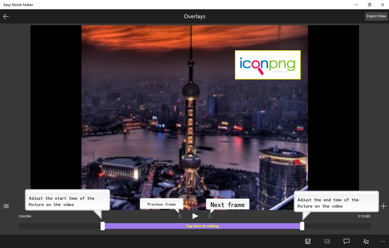
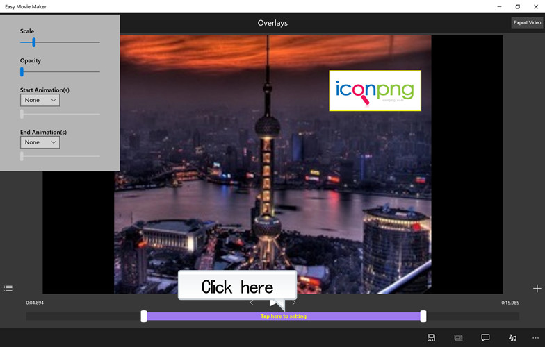
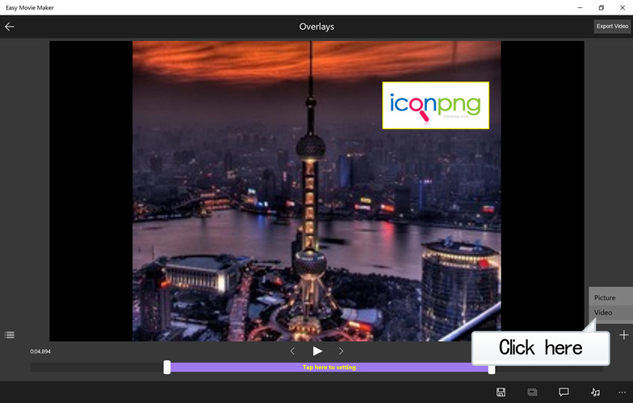
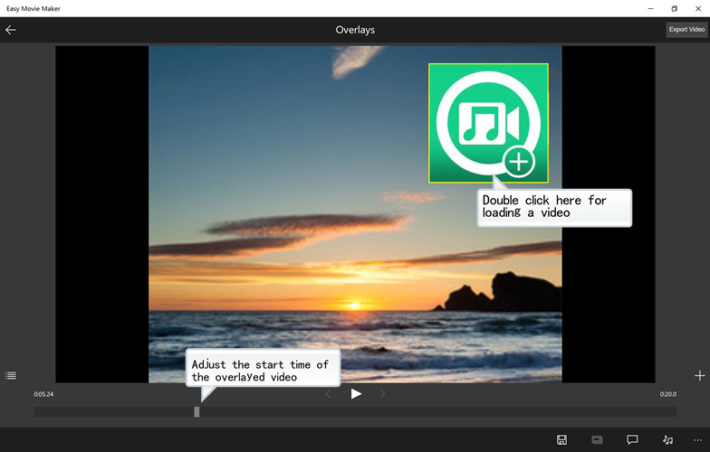
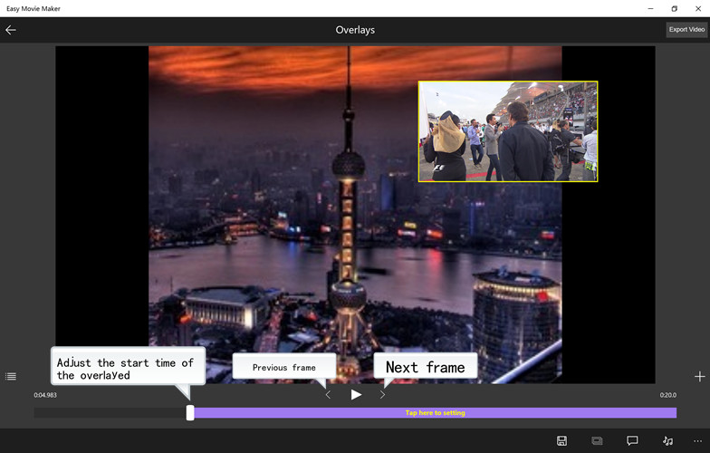
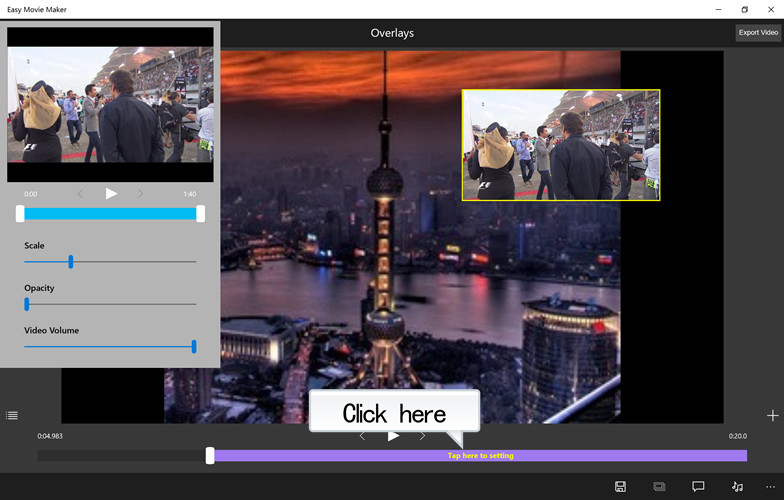
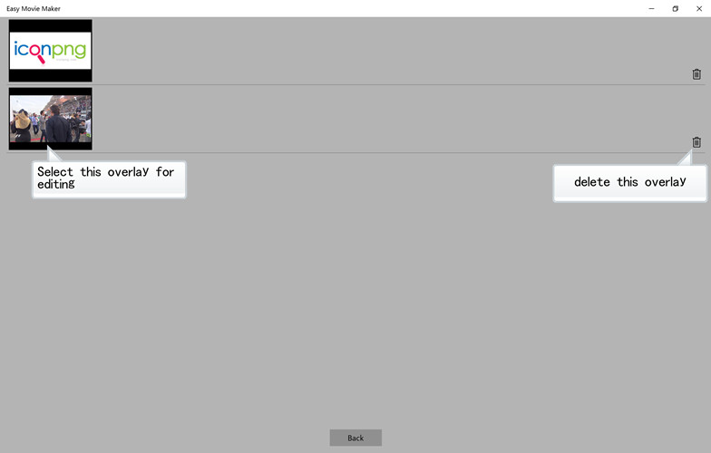

How do I overlay an picture or video on the video
Go to the "Overlays" page while you add or edit a project.

1. Overlay a picture.
Adjust the start time of the picture on the video by moving the slider at the bottom, double-click the middle of the screen icon to load a picture file. Holding and moving the icon if you want to change the position of the picture on the video.

Adjust the start and end time of the picture on the video by moving the white button on both sides of the green area at the bottom. If you want to replace the picture file then double-click the middle of the screen icon for loading a new picture file.

Click the purple area at the bottom to pop-up the dialog box for the picture effects settings.

2. Overlay a video.
Click "+" icon and select "Video".

Adjust the start time of the overlayed video by moving the slider at the bottom, double-click the middle of the screen icon to load a video file. Holding and moving the icon if you want to change the position of the overlayed video.

Adjust the start and end time of the overlayed video by moving the white button on both sides of the green area at the bottom. If you want to replace the video file then double-click the middle of the screen icon for loading a new video file.

Click the purple area at the bottom to pop-up the dialog box for the video effects settings.

Click  go to the overlay list page.
go to the overlay list page.
